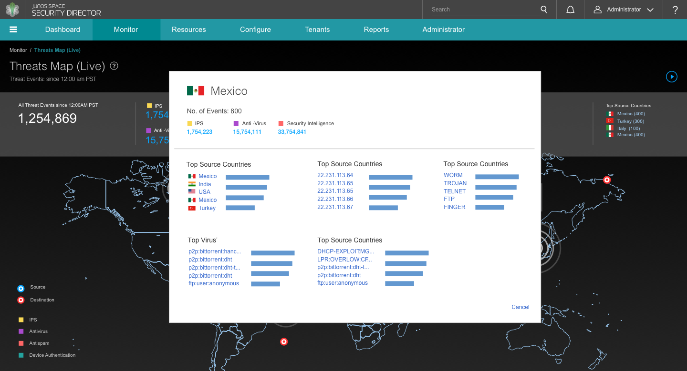
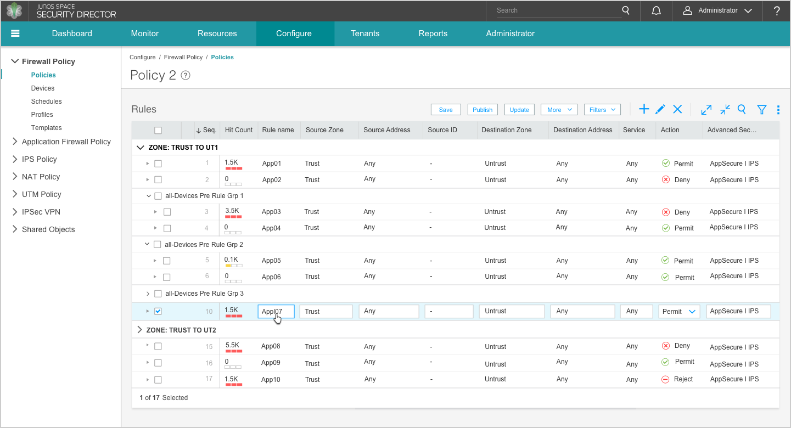
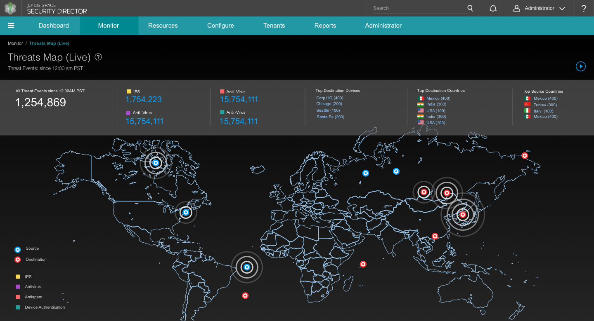

Designing and building enterprise software is a complicated task. Designers need to optimize complex workflows, think about scalability, and design at a rapid and agile pace. So, to design effectively, the best resource designers can rely on is the UI toolkit. The UI toolkit is a collection of predesigned UI elements that range from empty baseline screens and spacing guidelines to buttons, typefaces, and colors. Below we discuss the principles behind the Juniper UI toolkit, and how Juniper UX and development teams use it to design complex networking and security applications.
Sample UI toolkit elements
We think of our toolkit as a set of lego blocks. In our case, the blocks are various UI elements, and, like Lego, we provide a set of guidelines for assembling them:
1. Toolkit elements should be put together carefully considering consistent spacing, typography, and color
Designers need to use toolkit components in a strictly consistent way. The size and spacing of toolkit elements should match the existing style and remain the same for every usage. Consistency makes application screens cleaner, easier to use, and more balanced. Consistent sizes and relationships between elements help users see patterns and create visual flow between application screens. Consistent use of color and typography helps users navigate through an application and know where they are and what they are doing. Consistency in design also makes it easy for developers to quickly build screens by using and reusing existing elements.
Sample base screen with spacing guidelines
2. Toolkit elements can be modified occasionally but only in ways that keep that integrity of the original element intact
Designers should avoid changing the style of the toolkit components, but they can modify them for unique use cases. Our goal is to present our application screens in the most compelling format and sometimes that requires modifying existing patterns. The UI toolkit is a collection of baseline designs to present content in the most intuitive and useful manner, and it can evolve to improve and optimize components if necessary.
Default overlay design
Variation of overlay design for threat map view
3. The toolkit should be translated into a front end framework with a one-to-one mapping to all toolkit elements
The front end framework components built by developers should mirror the elements in the UI toolkit. Our toolkit elements are compiled in a master Sketch file that is accessible to all designers. We also share the master file with front end developers through a specs tool like Zeplin to keep the front end implementation consistent with our designs. This allows designers to quickly assemble high fidelity wireframes, compile them into interactive prototypes, and hand these over to developers who can quickly build application screens using existing framework components.
Development specs for dashboard widget framework components (via Zeplin)
4. Most importantly, the toolkit is meant to spark innovation
The toolkit provides a great foundation for designers to dive into rapid prototyping and brainstorming to create innovative UI and user experience solutions. It is almost impossible to create something completely unique from scratch. At the same time, if we limit ourselves to only available options and existing patterns, it may lead to generic product designs. Therefore, the UI toolkit and its elements should serve as a starting point for experimentation and innovation to create effective user workflows and UIs.
Security Director application monitoring view
Security Director firewall rules grid
Security Director live threat map view
As visual designers, we create UI design guidelines for building consistently beautiful and effective applications. We provide recomendations based on the 6 principles of visual design: unity and harmony, balance, hierarchy, scale and proportion, dominance and emphasis, similarity and contrast. The UI toolkit described above is a great way to document and enforce these recommendations.
Team
Lyuba Nesteroff, Staff Visual/UX Designer
Yelena Kozlova, Sr. Visual Designer
Originally published on Medium for Juniper UX